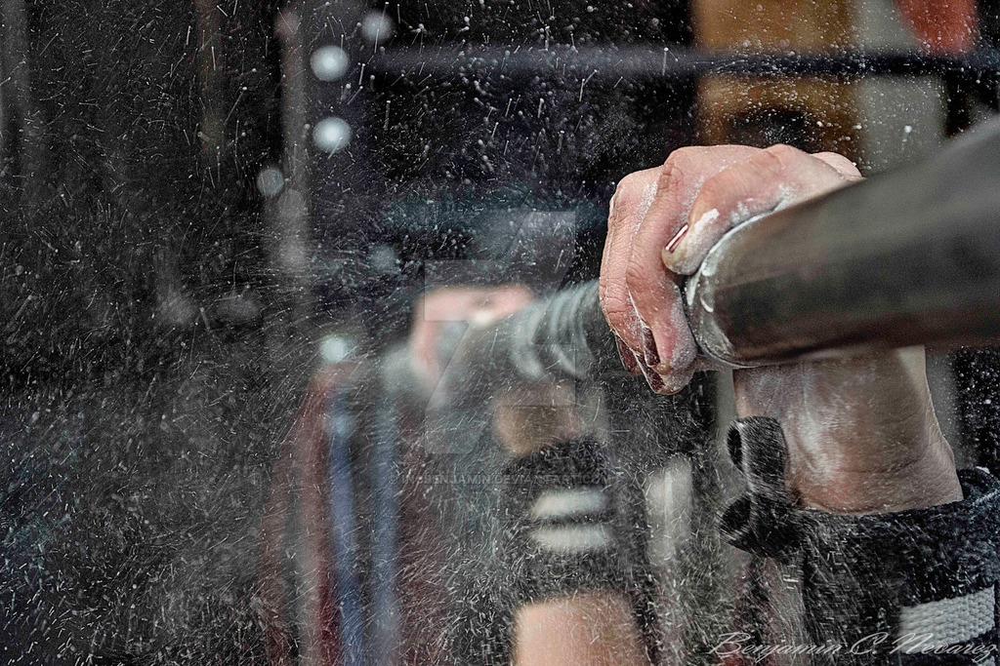

<!--
  Generated template for the Detail page.

  See http://ionicframework.com/docs/components/#navigation for more info on
  Ionic pages and navigation.
-->
<ion-header>

  <ion-navbar class="myNav" >    
  </ion-navbar>

</ion-header>


<ion-content >

		
			<!-- 
	
	
	
		<div id="content">
	        <div id="profile-info">
	          <div id="profile-name">
	          		<h3>{{exercise.name}}</h3>
	          		<h5>{{exercise.rm}}{{exercise.medida}}</h5></div>
	          <h1 class="center">{{porcentaje * warmth}} {{exercise.medida}}</h1>
	        </div>
        
      </div>-->
			<div id="profile-bg"></div>
			<ion-card class="card-exercise">
					
					<ion-card-content>
						<ion-card-title>
							{{exercise.name}}
						</ion-card-title>
						<p>
						{{exercise.description}}
						</p>
						<h5>	Mi RM =  {{exercise.rm}}{{exercise.medida}}</h5>
						<h1 class="center">{{porcentaje * warmth}} {{exercise.medida}}</h1>
						<p>
								<ion-item>
										<ion-badge item-start color="danger">{{warmth}}%</ion-badge>
									<ion-range min="10" max="120" step="5" snaps="true" [(ngModel)]="warmth" color="primary">
												<ion-icon range-left small color="danger" name="remove"></ion-icon>
												<ion-icon range-right color="danger" name="ios-add-circle-outline"></ion-icon>
										</ion-range>
								</ion-item>
						</p>
					</ion-card-content>
				</ion-card>

				<ion-fab right bottom *ngIf="identity" (click)="editaEjercicio(exercise)" >
					<button ion-fab >
						<ion-icon name="create"></ion-icon>
					</button>
				</ion-fab>

				<ion-fab left bottom *ngIf="identity" (click)="deleteEjercicio(exercise)" >
					<button ion-fab color="danger">
						<ion-icon name="trash"  ></ion-icon>
					</button>
				</ion-fab>


    
	


	
</ion-content>
